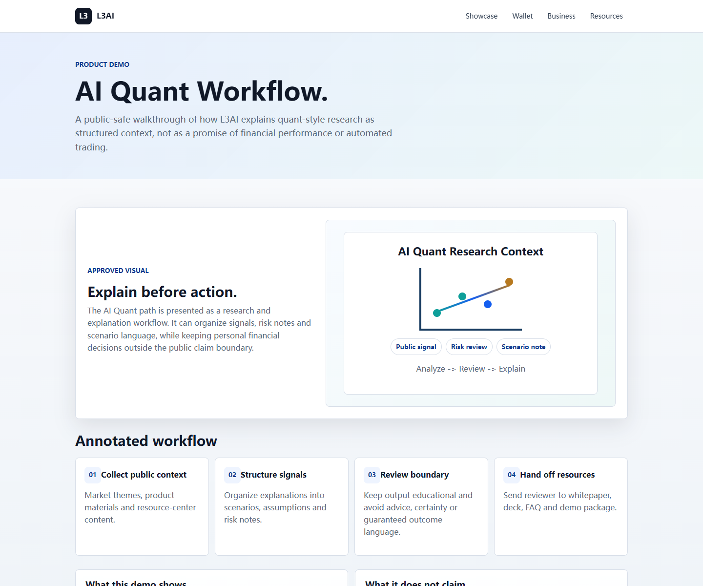
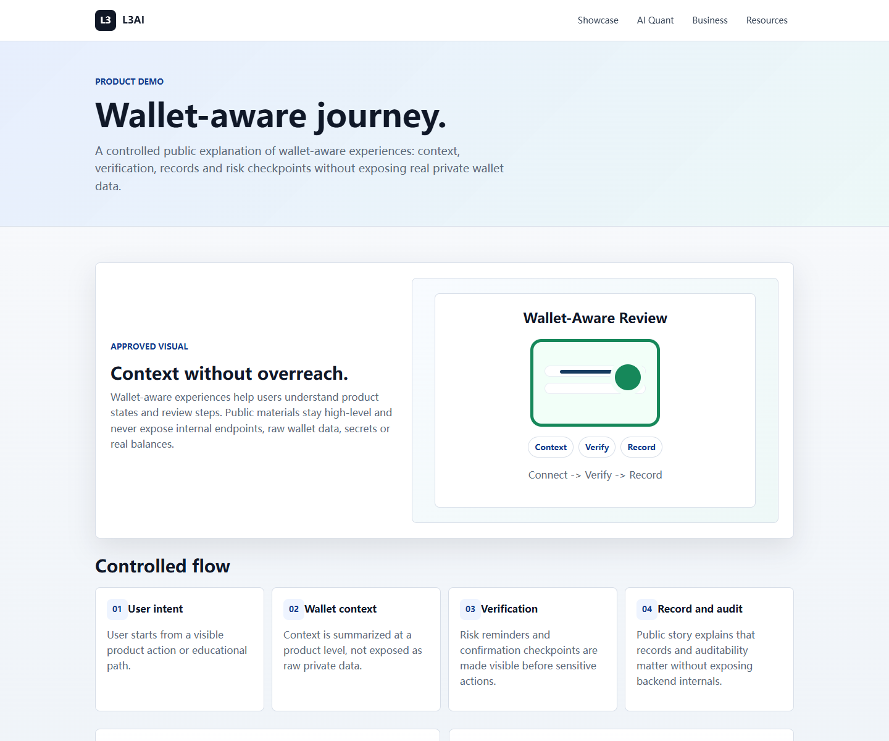

Discover
Start from the public homepage, product narrative and FAQ boundary.
L3AI public launch experience
L3AI turns fragmented market signals, wallet-aware product journeys, education, risk boundaries and public launch materials into one guided enterprise-grade experience.
Platform story
L3AI presents market context, product education, wallet-aware journeys and risk notes as a structured experience. The public site now leads with product proof before documents.
Start from the public homepage, product narrative and FAQ boundary.
Review AI-assisted market context, wallet-aware journeys and product modules.
Open the business model, roadmap, whitepaper and investor-style deck.
Keep safety, limitations and public risk language visible before conversion.
Live demo proof
The showcase connects homepage discovery, AI Quant explanation, wallet-aware education, business model context and public resources in one reviewer-friendly path.



Business model visualization
Automation capability
The current package connects source facts, AI-assisted drafting, rendered collateral, link checks, sensitive scans and public manifests without exposing private source or secrets.
Website copy, FAQ, whitepaper, deck narrative, scripts and bilingual public materials.
Public screenshots, demo frames, product journeys and readiness trackers.
Manifests, sitemap, GitHub Pages publishing, link scans and no-secret boundaries.
Render packages, voice-over scripts and subtitles ready for ffmpeg or editor rendering.
Ecosystem overview
Trust and safety
L3AI public materials do not provide personalized investment advice, guaranteed outcomes, exchange endorsements or real-funds demonstrations. Planned functionality is kept separate from current public assets.
Roadmap summary
Homepage, showcase pages, whitepaper, business plan, FAQ, media kit, manifests and public GitHub Pages site.
Enterprise homepage redesign, improved visuals, toolchain validation and final video-render workflow.
Motion graphics, professional voice-over, authenticated recording pack and deeper localization.
Choose your path
Flagship resources
The Resources page remains the complete library, but the homepage now leads with the product story and routes deeper review by intent.